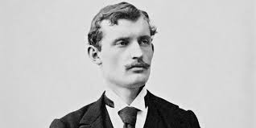

Edvard Munch
Pintor y grabador noruego. La estilización de la figura, la prolongación de las líneas y, en ocasiones, el intenso dramatismo y la intensidad cromática, hicieron del estilo pictórico del noruego Edvard Munch uno de los modelos estéticos del expresionismo de las primeras décadas del siglo XX.
Sufrió muy joven la pérdida de sus seres queridos, y el espectro de la muerte, que llenó su niñez, lo acompañaría durante toda su vida, convirtiéndose en uno de los temas recurrentes en sus obras. En 1885 llevó a cabo el primero de sus numerosos viajes a París, donde conoció los movimientos pictóricos más avanzados y se sintió especialmente atraído por el arte de Paul Gauguin y Henri de Toulouse-Lautrec. No tardó en crear un estilo sumamente personal, basado en acentuar la fuerza expresiva de la línea, reducir las formas a su expresión más esquemática y hacer un uso simbólico, no naturalista, del color, y de ahí su clasificación como pintor simbolista, sus obras mas populares son:
Melancolía
El beso
El Vampiro
Cenizas
Madonna
Menu
